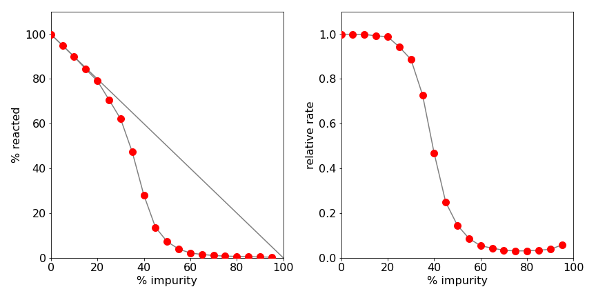

4 Energy transfer. Autocatalytic reaction and spreading of fires
Contents
4 Energy transfer. Autocatalytic reaction and spreading of fires#
%matplotlib inline
import numpy as np
from sympy import *
init_printing() # allows printing of SymPy results in typeset maths format
import matplotlib.pyplot as plt
plt.rcParams.update({'font.size': 16}) # set font size for plots
4.1 Forster or dipole-dipole energy transfer#
Forster, also called dipole - dipole or resonance energy transfer is a vital process in photosynthesis as it is the mechanism by which energy is transported in the antenna and then to the reaction centre. The same process is used in FRET, which is widely used in the biosciences as a ‘spectroscopic ruler’ to measure how close one molecule is to another. In this process an excited state of a molecule D* can, non-radiatively, transfer energy to a nearby acceptor molecule A, provided energy is conserved, which means that the donor’s emission spectrum overlaps with the acceptor’s absorption;
The rate constant \(k(R)\) varies as the inverse sixth power of the separation between donor and acceptor; therefore, the rate constant is distance dependent. Calculating the decay of the donor’s excited state, therefore necessitates summing over acceptors at all distances, not just the donor’s nearest neighbours; see Figure 15. In solution the acceptors surround the donor and each other at random, rather like the currants in a cake and to simplify a calculation it is normally assumed that no diffusion of the molecules takes place on the timescale of energy transfer.
If the donor has a lifetime \(\tau = 1/k_f\) when no acceptors are present, the rate constant for Forster, or dipole - dipole, transfer to an acceptor at a distance \(R\) nm away from the donor is
and consequently the excited state decays with a distance dependent rate constant
As some acceptors will be closer than others to the donor, these will interact more rapidly because of the \(1/R^6\) distance dependence. This means that the rate constant of energy transfer is not a constant, but depends upon time! This arises because the few nearby acceptors interact faster on average than those far away and, even though there are far more of them farther away, they do not fully counteract this rapid quenching. Overall this leads to faster than expected quenching at short times and therefore to a non-exponential decay. A similar effect occurs in the diffusion quenching of molecules in solution.
The constant \(R_0\) is the critical transfer distance at which the rate constant of fluorescence equals the rate constant of transfer to the donor and is calculated from the overlap of the donor’s emission spectrum, fluorescence or phosphorescence, with the acceptor’s absorption spectrum; see Turro (1978). This is usually a number that is large compared to the dimensions of a molecule, a typical value of \(R_0\) being 3 nm but can be twice this for some molecules such as the Chlorophyll’s, and this greatly aid the light - harvesting process in photosynthesis. The parameter \(\chi^2\) describes the orientation of the donor to acceptor transition dipoles, the average value in solution is \(\chi^2 = 2/3\).
By calculating the chance of energy transfer at some distance \(R\), the decay of the fluorescence intensity of the excited molecules is described by
which means that the energy transfer rate constant varies as \(t^{-1/2}\) and so produces a non-exponential decay at short times. This can be seen by rewriting the intensity as
This behaviour is shown in Figure 13 and is a direct consequence of the spatial arrangement of several acceptors around a donor. It has been confirmed by numerous experiments.
Figure 12. Donor (centre) surrounded by acceptors at different distances. The transfer rate and hence excited state decay of the donor depends upon how far away the acceptors are.|
To calculate the decay of the excited donor using a Monte Carlo method, the donor is placed at the origin. Initially, it might seem to be a good idea to place molecules at random on a grid, record the numbers in an array, and work out the rate constant for transfer for each of them. However, only the distance from the donor is needed, not the coordinates, and each randomly chosen distribution of molecules is only needed once; therefore, the distance can be calculated ‘on the fly’ by guessing x-, y-, and z-values, but not saving them, and calculating the distance from the origin using Pythagoras’ theorem. Only distances up to a certain value are used, so that the enclosed volume is a sphere of radius \(6R_0\), this being large enough to give a negligible contribution to the total rate constant. The sum of all these rate constants plus that for fluorescence is added up to give the total chance of transferring energy or fluorescing. Because the transfer rate goes to infinity at zero separation, a minimum separation of donor an acceptor has to be determined. This is chosen to be 1 nm, which is only slightly larger than the typical centre to centre separation on contact, of two large aromatic molecules.
The constant \(R_0 = 3\) nm, and the cut-off sphere \(6R_0\). If the concentration is chosen to be 0.002 M, this corresponds to
or 29 molecules in a sphere of radius \(6R_0 = 18\) nm. The maximum rate is set at \(χ^2k_f R_0^6\) at a distance of 1 nm. This is arbitrary but reasonable for a molecule with a diameter of 0.5 nm. The minimum rate is \(1/6^6\) or 46656 times smaller and is so small that distant molecules make an insignificant contribution to the sum of the rate constants. To speed the calculation, the rate constant calculation is simplified to remove repeated unnecessary arithmetic;
where \(d\) is the distance scale chosen, the limit being \(6R_0\) with \(d = 6\) and where \(x, \; y\), and \(z\) are chosen from a uniform distribution to be in the range -1/2 to 1/2. It may seem rather finicky simplifying the rate constant \(k\), but this is in the innermost part of the calculation. If there are 20 acceptors and 5000 repeats this means evaluating exactly the same multiplication, division, square root and power, \(10^5\) times rather than just once. The calculation is run for 50 ns, and the data put into 150 bins.
# Algorithm: Forster Energy Transfer by monte-carlo simulation
#-----------------------------------
def ForsterET():
Acount= np.zeros(bins,dtype=int) # define arrays
dtime = np.zeros(bins,dtype=float)
for i in range(bins):
dtime[i]= i*maxt/bins
s = 0.6667*kf/d**6 # constants for rate
for k in range( reps): # start calc loop
a0 = kf # fluorescence rate
for i in range(n):
x = np.random.ranf() - 0.5 # choose acceptors
y = np.random.ranf() - 0.5 # x,y,z coordinates
z = np.random.ranf() - 0.5
rate = s/(x**2 + y**2 + z**2)**3 # 2/3*kf*(R0/R)**6
if rate > Rmax : rate = Rmax
a0 = a0 + rate # sum rate
pass
t = -np.log( np.random.ranf() )/a0 # calc time eqn (12.11)
indx = int(np.round(t*bins/maxt) ) # make index
if indx < bins-1 :
Acount[indx]= Acount[indx] + 1 # histogram
pass
pass
# end reps loop
return dtime,Acount
#----------------------------------
kf = 1/10.0 # 10 ns lifetime
c = 0.002 # conc mol/dm3
R0 = 3.0 # R0 in nm
d = 8.0 # sphere radius d*R0
Avog= 6.023e23/1e24 # num molecs / nm3
n = int(np.round( c*Avog*4/3*np.pi*(d*R0)**3) ) # integer number molecs
Rmax = (2/3)*kf*(R0/1)**6 # maximum rate
reps = 20000 # repeat calc’n
bins = 150 # size of histogram
maxt = 50.0 # maximum time
Acount= np.zeros(bins,dtype=int) # define arrays
dtime = np.zeros(bins,dtype=float)
#dtime,Acount = ForsterET() # remove # to calculate
#plt.plot(dtime,Acount)
#plt.ylim([1,1e4])
#plt.yscale('log')
#plt.show()

Figure 13. Decay of a donor surrounded by many acceptors and a theoretical fit to equation 14 with \(\alpha = 1.25\).
A log plot of the data fitted to the theoretical equation (12.14) is shown in Fig. 13. The fit is good but not exact. At small times, the calculated curve does not match the simulation that well. This may be due to the small number of calculation performed, 20000 only, but it is more likely to be due to the fact that the theoretical curve is only an approximation and clearly not exact at very small times because at time zero the rate constant tends to infinity.
It is surprising at first to see that the decay is not exponential. The reason for this is, as explained above, that the few nearby acceptors quench the donor preferentially compared to the more distant ones, which although more numerous, quench with ever decreasing rate constants. Fluorescence and phosphorescence decays measured by many donor - acceptor pairs confirm this type of decay (Birks 1970; Lacowicz 2004).
5 Autocatalytic reaction on a surface and the spreading of fires#
The spatial arrangement of molecules or other objects can have a special effect on their behaviour. As a molecular example, suppose that a nanoscale device consisting of a small reactive surface of limited area is covered with a monolayer of type A molecules. A single reactive molecule B is now introduced, which can diffuse around and catalyse other molecules from type A to itself, the reactive form B; the reaction is autocatalytic,
However, during the manufacturing process, the surface is poisoned by impurities and these displace type A molecules. These impurities clearly limit the ability of the catalyst to work but are difficult to control, and so it is important to discover what level of impurity can be tolerated.
Using a Monte Carlo method, the number of molecules catalysed as a function of impurity level can be calculated by assuming, for example, that a molecule of type B can only catalyse the four molecules adjacent to it on a square grid. The number of molecules reacted vs fraction of impurities \(x\), can be plotted and analysed.
A similar problem, but on an entirely different scale, could be a fire in a block of forest in which trees are spaced regularly on a square grid. In the UK, Forestry Commission planted forests are often of this type. Over the years, trees have either been felled or have blown down in storms, and consequently spaces exist at random places between the trees. Should a forest fire break out, the extent to which the spreading fire is sensitive to the number of these gaps. The gaps are equivalent to impurities in the chemical model. The results show that the extent of the reaction and of the spreading of a fire depends non-linearly on the impurity concentration or gaps between trees. A certain level of impurity only can be tolerated; a slight fraction more and the reaction rate dramatically falls. This is behaviour typical of percolation. There is a distinction to be made between percolation and diffusion. In the diffusion of, say, milk in a cup of tea, the random motion of the molecules is governed by the laws of diffusion and the medium (the tea) in which diffusion occurs is uniform. In percolation, the randomness is inherent in the medium in which a fluid finds itself. Thus a solid, such as a sinter glass filter, which is full of randomly interconnected channels exhibits percolation. A fluid will pass through the larger channels but surface tension restricts flow in smaller ones. The manner in which electrons flow through amorphous films can also be described as percolation.
The computational strategy is to represent the surface monolayer as a matrix in which each matrix element is one of three integers to represent A and B molecules and impurity. It does not much matter what these integers are, so zero is chosen for the impurity, 1 for type A and 2 for type B molecules. In the case of the forest, the number 2 can represent the burning trees, 1 those that can catch fire, and 0 the areas with no trees. The initial tree that catches fire or the initial position of molecule B is chosen at random, as are the impurities. The matrix is searched sequentially and the neighbours of each molecule are tested. If a neighbour is of type A, then it is converted into type B. This is repeated until no more can be converted and the number changed is counted. The calculation is then repeated several times with atoms/trees at different random positions. After repeating the calculation at different impurity concentrations, the number of A type molecules converted to B vs the fraction of impurities is plotted.
Figure 14. The array dimensions are made larger than the reaction area to avoid edge effects.
The algorithm is similar to that used for SIR disease propagation, but now a two - dimensional array (matrix) is used. The algorithm is split into parts:
(a) defining constants and initial values,
(b) filling the matrix with the different type of molecules, and
(c) running the calculation with the restriction that only adjacent molecules can react and are those whose index is \(\pm 1\) in each of the x- and y-directions, making four possibilities.
The calculation is continued until the number of changes can go no further, rather than for a number of days, as in the disease propagation problem. This is done in a ‘while’ loop; see the code below. A counter \(\mathtt{c}\) is used and one added to it each time the matrix has a value of \(2\). The ‘while’ loop continues to operate until the number of type B molecules are unchanged, and then the loop is left when the condition \(\mathtt{b \gt c}\) is met. In each iteration, the whole array is searched.
The data arrays are made \(2\) numbers larger in each direction than the true size, so that when the calculation reaches the edge of the array, the array bounds are not exceeded. These points around the edge of the array are ignored in the calculation; the ‘for’ loops start at \(1\) and extend to \(n\) for this reason, see sketch Fig. 14. The arrows show how a site is connected to another.
The numbers used in the following calculation are only indicative. The grid is relatively small, with \(20\) units on each side; increasing this will significantly slow down the calculation as will increasing the number of repeats, presently set at \(10\), or the number of fractions to be calculated between \(0\) and \(1\).

Figure 15. Left: The percentage of molecules reacted (or trees burning) as a percentage of impurities (or gaps between trees). The sudden fall off is a sign of the connectivity ending in the spatial arrangement. The straight line shows what would be expected if the number of reacted molecules were directly proportional to the number of impurities. Right: The relative reaction rate vs. percentage of impurity.
A typical set of data is shown in Figure 15. The right-hand graph shows the relative reaction rate vs percentage of impurity. The sudden fall off in the number of molecules reacted is a sign of percolation. The left-hand graph shows the percentage of A molecules that have reacted vs the percentage of impurities, \(x\). The straight line in this graph is \(100 - x\), and shows what would be expected if the number of reacted molecules were linearly proportional to the number of impurities present. Clearly, linearity is not the case. The reason for this behaviour has to do with the connectivity of the array when impurities or gaps are present. In two dimensions, islands of potentially reactive molecules can become isolated by impurities and this limits B type molecules from reaching these molecules. Similarly, gaps between burning trees prevent others from catching fire. The right-hand graph shows that \(\lt 30\)% impurity can be tolerated without affecting the reaction rate by very much, but a \(\gt 45\)% impurity almost stops the reaction. The maps, Figure.19, show a typical pattern of molecules or trees at different percentages of impurity or gaps. The change from almost complete connectivity to almost none is quite dramatic and typical of percolation; see Sahimi (1994) for a discussion of percolation.
Figure 16. Maps of the amount of B molecules (yellow), A type molecules (blue-green), and impurity (black), with different a percentage of impurity, from top left, top row 10% & 30%, and bottom row 50% & 70%. Alternatively, the picture shows the number of burning trees (yellow) the number not burning (blue-green), and the number of gaps (black). The change from 30% to 50% impurity (or gaps) is quite dramatic, the fire being severely limited in the latter.
# Algorithm: Effect of impurity
# P[,]>= 1 = A molecs, 2 = B molecs, 0 = impurity.
n = 20 # size of grid side
reps = 100 # repeat calc’n
num_fract = 10 # number of fractions calc’d
delta_fract= 0.1 # increment fraction
data = np.zeros(num_fract,dtype=float) # array for results (y axis)
fdata= np.zeros(num_fract,dtype=float) # fractions (x axis)
def Impurity():
fract = 0.0 # initial fraction impurity
for L in range(num_fract): # fraction loop to end
asum = 0
for k in range(reps): # repeat loop
P = np.ones((n+2,n+2),dtype = int) # matrix of molecs/ trees all 1
fn = int(np.trunc(fract*n*n) ) # make into integer
# part b make fraction of impurities
num = 0
while num < fn : # exactly fract impurity
ra = np.random.randint(1,n+1)
rb = np.random.randint(1,n+1)
if P[ra,rb] != 0:
P[ra,rb] = 0
num = num + 1
pass
pass
num = 0
# choose one type B molecule
while num < 1 :
ra = np.random.randint(1,n+1) # in range 1 to n+1
rb = np.random.randint(1,n+1)
if P[ra,rb] == 1 :
P[ra,rb] = 2
num = 1
pass
pass # end while num
# part c main calculation starts ###
b = -1
c = 0
while c > b : # check if calc ended
b = c # store old value in b
c = 0 # reset c
for i in range(1,n+1):
for j in range(1,n+1):
if P[i,j] == 2 : # search array
if P[i,j-1] == 1 : P[i,j-1] = 2
if P[i,j+1] == 1 : P[i,j+1] = 2
if P[i-1,j] == 1 : P[i-1,j] = 2
if P[i+1,j] == 1 : P[i+1,j] = 2
c = c + 1
pass
pass # end while C
asum = asum + c
pass # end reps
# make results
av = asum/reps
fdata[L] = fract*100
data[L] = av/n**2*100.0
fract = fract + delta_fract
print('results',L, fdata[L],data[L])
pass # end L loop
return fdata,data
#-------------------------------------
#fdata,data = Impurity()
#print('finished')
# plot data and fdata to give fig 18.
#plt.scatter(fdata,data)
#plt.show()